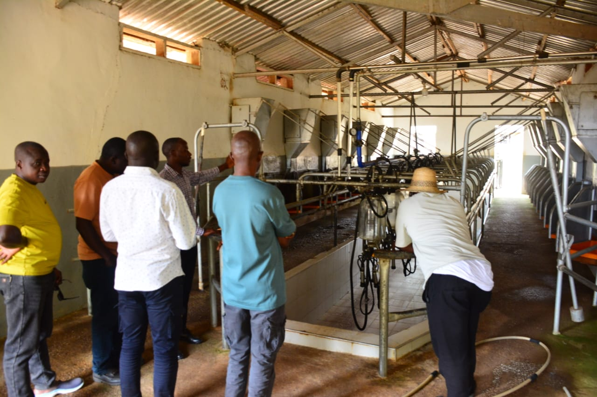
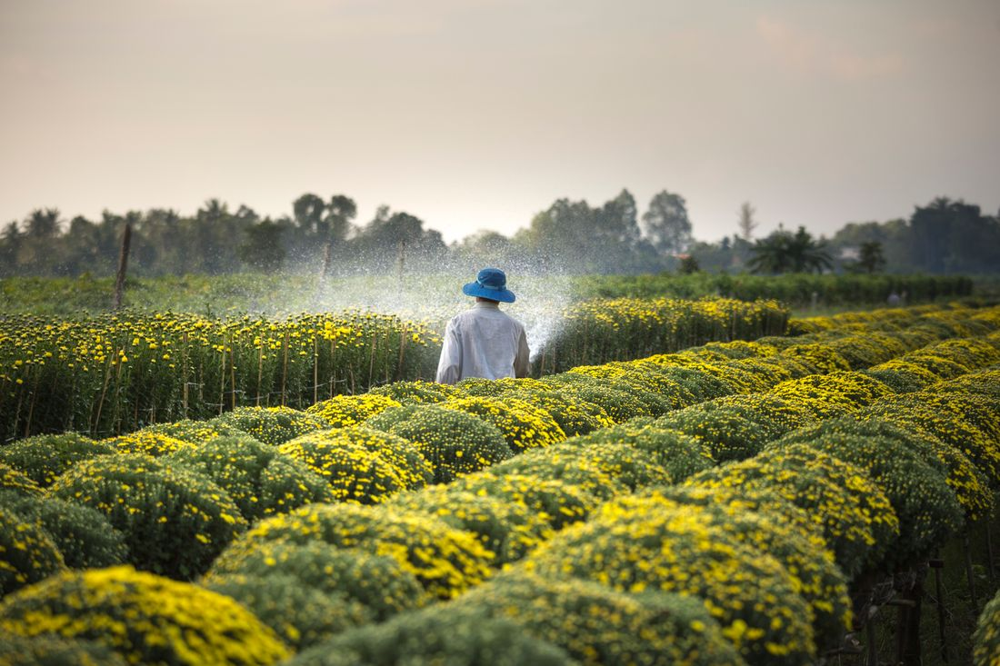
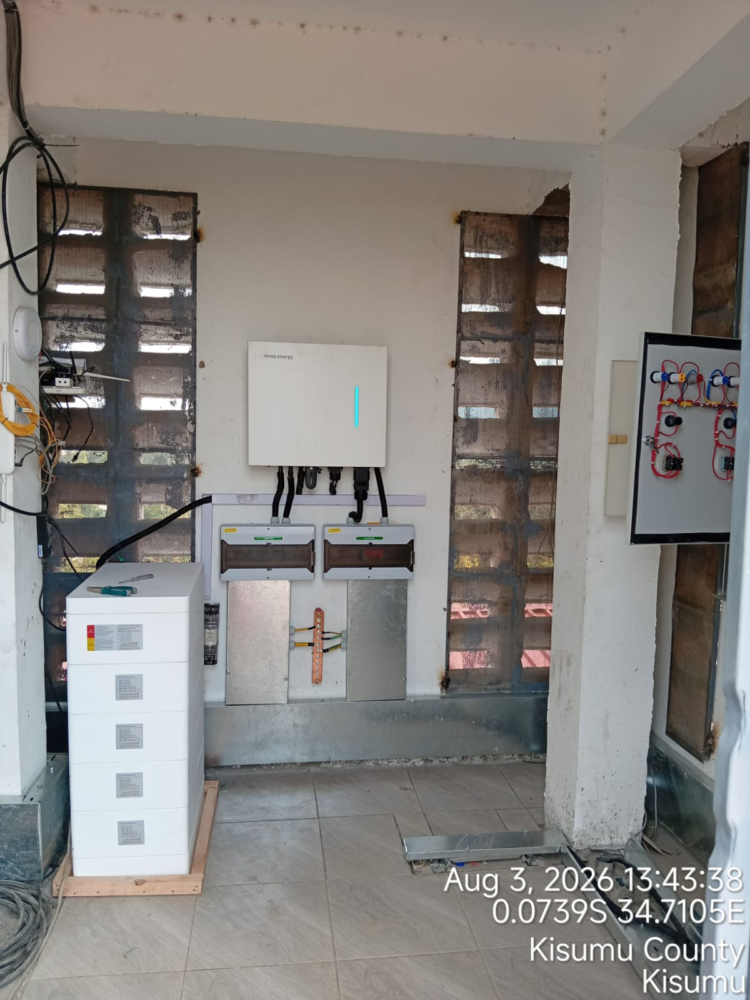
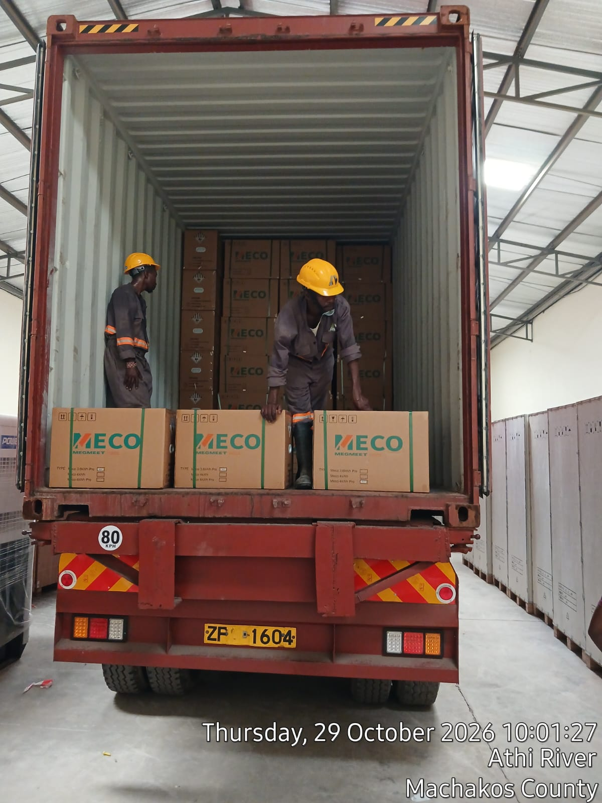
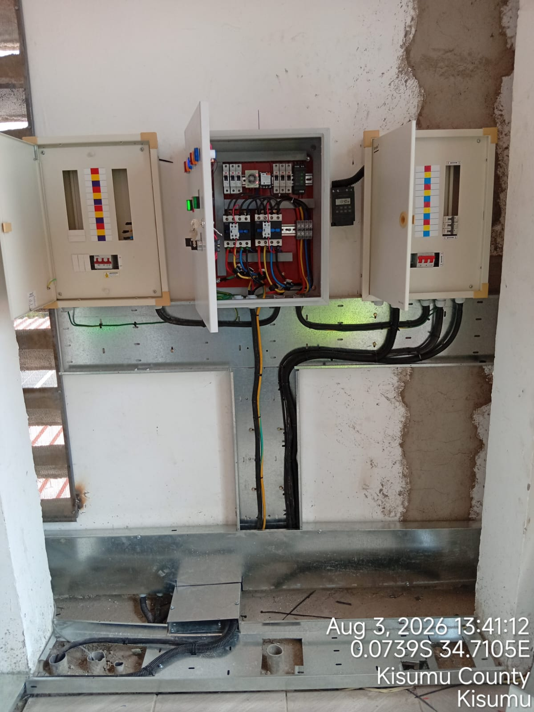
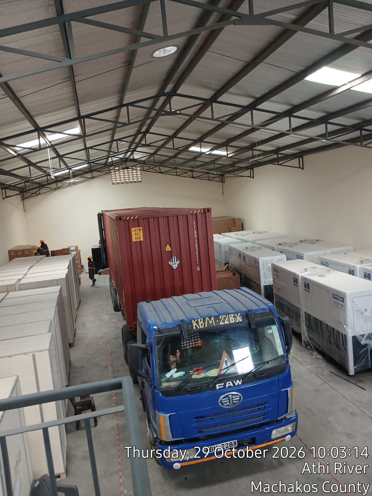

OUR STORY
Connecting People, Enterprise & Opportunity
We bring businesses, producers, partners and communities together to turn ideas into practical action and shared opportunity.
Discover Our Story →IDEAS & PERSPECTIVES
Ideas, perspectives and practical approaches for inclusive growth.
LATEST PERSPECTIVES
Short reads on the themes that help connect businesses, communities and opportunity.

OUR STORY
We bring businesses, producers, partners and communities together to turn ideas into practical action and shared opportunity.
Discover Our Story →
Reliable market connections, practical support and collaboration can help producers turn their work into more sustainable opportunity.

Energy solutions work best when they start with how people and businesses use power, and what they need it to make possible.

Thoughtful coordination between suppliers, logistics partners and markets can make supply chains more responsive.

Early and meaningful participation helps make development initiatives more relevant to the people they aim to serve.

Partners who bring complementary skills and clear responsibilities can make complex projects easier to deliver.
Resilient infrastructure starts with a clear understanding of local priorities, practical delivery and long-term use.
We would love to hear from people working toward inclusive, sustainable growth.